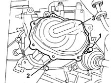
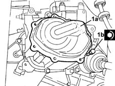

2110C30 gearbox rear cover - r + r.
- Path
- Procedures > 21 GEARBOX > 2110 MANUAL GEARBOX AND DIFFERENTIAL > 2110C gear cases and covers of manual gearbox with differential > 2110C30 gearbox rear cover - r + r.
- Kind
- repair procedure (removal / refitting; the operation number is the code)
- Applies to
- engines: 1.2 8v, 1.2 16v, 1.4 16v; all production periods
- Interactive page
- https://sloeber94.github.io/elrnDB-lYpsln/en/#/2429112
Applies to: engines: 1.2 8v, 1.2 16v, 1.4 16v; all production periods
 Removing
Removing
 Refitting
RefittingPosition the vehicle on the ramp.
Proceed with removal 4450B02 left front wheel r r .
Proceed with removal 7055B90 Left front WHEEL ARCH LINER - R.R. .
Proceed with removal 5530B10 battery - r+r .
Proceed with removal 5530B52 Battery DRIP TRAY/SUPPORT - R.R. .
Proceed with removal 1008A42 gear box left rigid mount - r r .
1. Undo the bolts fixing the gearbox rear cover.
2. Cut the sealant.
3. Remove the gearbox rear cover.

Applies to: engines: 1.2 8v, 1.2 16v, 1.4 16v; all production periods
Refitting
RemovingCleanany residues of sealant from the matching surfaces between the gearbox rear cover and the gearbox.
Apply the recommended sealant to the matching surfaces between the gearbox rear cover and the gearbox.
 | Type | Component | Name | Qty. |
|---|---|---|---|---|
- | Silicon sealant | GEARBOX REAR COVER | - | - |
1. Place the gearbox rear cover (1a) in its housing and fasten it by tightening the bolts (1b) to the recommended torque.
 | Fastening | Component | Ø | Value (daNm) |
|---|---|---|---|---|
1b | Bolt | GEARBOX REAR COVER | M6 | (Gearbox side) 0.5 ÷ 0.6 |

Applies to: engines: 1.2 8v, 1.2 16v, 1.4 16v; all production periods
Proceed with refitting 1008A42 gear box left rigid mount - r r .
Proceed with refitting 5530B52 Battery DRIP TRAY/SUPPORT - R.R. .
Proceed with refitting 5530B10 battery - r+r .
Proceed with refitting 7055B90 Left front WHEEL ARCH LINER - R.R. .
Proceed with refitting 4450B02 left front wheel r r .
Refill the manual gearbox and differential 0010T41 MANUAL GEARBOX OIL - Check level and top up, if necessary .
Remove the car from the ramps.